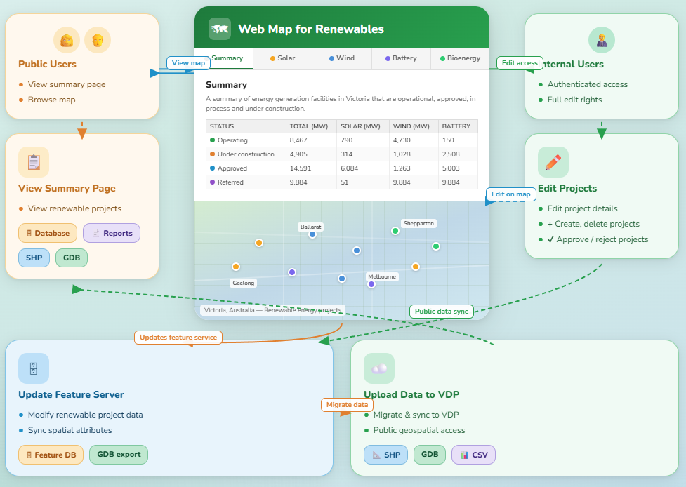

This project focuses on the development and maintenance of specialized GIS web applications tailored for managing renewable energy sites and heritage data assets across Victoria. The system streamlines complex ETL workflows and provides cross-functional visibility for planning teams.

Delivered streamlined internal tools that allowed planning teams to overlay renewable project boundaries directly against protected heritage zones, cutting manual review times significantly and ensuring regulatory compliance.